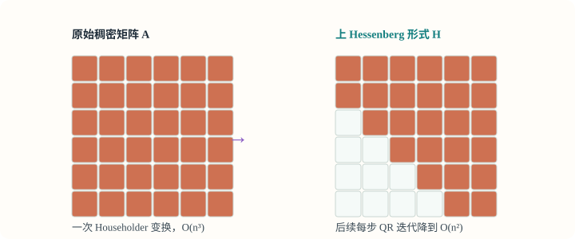
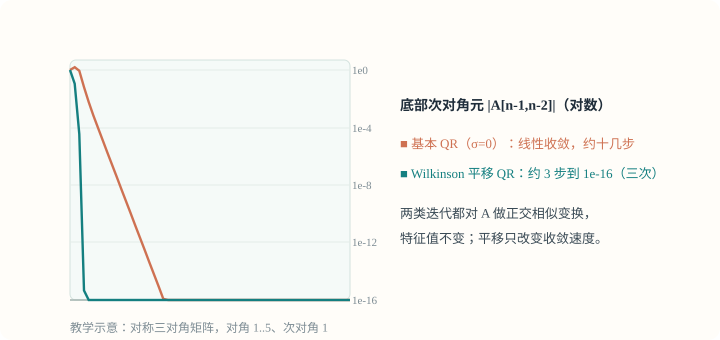

CHAPTER 24 · NUMERICAL ANALYSIS
QR 方法与特征值：Hessenberg 化与平移
上一章的幂法一次只能拿一个特征值。这一章要一次性拿到全部：用一组正交相似变换，像“洗牌”一样把矩阵的下三角一点点推到消失，对角线就浮出特征值。它就是 MATLAB eig、LAPACK 求解器背后的核心。
01 · QR 分解
输入：矩阵 A∈ℝᵐˣⁿ，m≥n 且列满秩。输出：A=QR，其中 Q 列正交（QᵀQ=I）、R 上三角。假设：列线性无关；否则需列主元（rank-revealing）QR。
QR 分解不唯一（可差一个符号），但存在。实现方式不同，数值稳定性差别很大：
| 方法 | 原理 | 稳定性 | 适用场景 |
|---|---|---|---|
| 经典 Gram–Schmidt | 逐列减投影 | 不稳定（正交性丢失） | 仅教学 |
| 修正 Gram–Schmidt | 逐项减已正交分量 | 较稳定 | 中等规模 |
| Householder 反射 | 镜像变换消元 | 非常稳定 | 稠密矩阵（首选） |
| Givens 旋转 | 平面旋转逐个消元 | 非常稳定 | 稀疏/带状矩阵 |
Householder 反射是工程首选：H=I−2vvᵀ/(vᵀv) 把向量反射到坐标轴上（首分量外全为零），n−1 次反射就把 A 化为上三角，这些 H 的乘积就是 Q。Givens 旋转每次只动两行，适合稀疏矩阵，不会引入大量填充。
02 · 基本 QR 迭代
想法朴素到可以一句说完：把 A_k 做 QR 分解，再把 Q、R 反过来乘，得到 A_{k+1}=R_kQ_k。
关键性质是相似性：A_{k+1}=R_kQ_k=Q_kᵀA_kQ_k，即每一步都是一次正交相似变换。正交相似不改变特征值，也不放大误差，所以所有 A_k 与 A 特征值完全相同。迭代把下三角元素“推”向右下方：若特征值模各不等，A_k 趋向上三角，对角元就是特征值；若有复共轭对，则收敛到拟上三角（对角线出现 2×2 块），这就是实 Schur 形式。
收敛速度与幂法同源：非对角块趋于零的速度约为 |λ_{i+1}/λ_i|。特征值模越接近，收敛越慢——这也解释了为什么基本 QR 迭代往往“能收敛，但很慢”。
03 · 上 Hessenberg 化
让 QR 变实用的第一件事：在迭代之前先把 A 化成上 Hessenberg 形式——主对角线、上三角、以及次对角线可能有非零，次对角线以下全为零。工具仍是 Householder 反射，左乘右乘成对进行，保持相似性：
这一步是一次性 O(n³)，看起来和一次 QR 分解一样贵；但关键在于只做一次。之后每步 QR 迭代可利用 Hessenberg 结构降为 O(n²)，而且 Hessenberg 形式在 QR 迭代下保持不变。若 A 对称，Hessenberg 退化为对称三对角，每步只要 O(n)。

O(n³)）化为上 Hessenberg 形式（右，后续每步迭代 O(n²)）。这与反幂法“先 LU 分解、后续只回代”的思路一致：一次投资，长期受益。04 · 带平移的 QR 与收缩
加速器是原点平移：先减 σ_k I 再分解，更新后再加回去。平移把“靠近 σ_k 的那个特征值”变得相对突出，从而加快分离。相似性仍然保持。
平移量的选择决定收敛阶：
- Rayleigh 商平移：取
σ_k=A_k[n,n]（右下角元素）。朴素有效，对对称矩阵可达到三次收敛。 - Wilkinson 平移：取右下角 2×2 子矩阵中更接近
A_k[n,n]的那个特征值。对非对称矩阵更鲁棒，是 LAPACK 的默认策略。
收敛后，次对角元素趋于零，相当于把右下角的一个特征值“解耦”出来。此时直接把它“削掉”（deflation），对剩下的子矩阵继续迭代。于是整个算法变成：Hessenberg 化 → 带平移 QR → 收缩 → 重复，即隐式位移 QR（Implicitly Shifted QR）。

|A[n-1,n-2]| 的下降。基本 QR（橙，σ=0）：1.0→1.6→0.88→6.4e−2→6.0e−3→… 线性收敛，需十几步；Wilkinson 平移 QR（青）：1.0→1.1e−1→3.4e−5→4.5e−16，约 3 步，呈现三次收敛。数据为本文教学演示的真实迭代值。05 · 失败边界
QR 方法很稳健，但它依然有边界与常见误读：
| 场景 | 原因 | 表现 | 对策 |
|---|---|---|---|
| 复特征值 | 实矩阵可无实特征值 | 对角线上出现 2×2 块，不趋对角 | 用实 Schur / 拟上三角理解 |
| 特征值聚类 | |λ_{i+1}/λ_i|→1 | 非对角收敛极慢 | 平移 + 收缩；提高精度 |
| 未做 Hessenberg 化 | 每步都是完整 O(n³) | 步数一多就无法接受 | 先 Hessenberg 化 |
| 平移撞上特征值 | A−σI 奇异 | 分解退化 | 微扰 σ；改用其他平移 |
06 · 实验与选型
用对称三对角矩阵（对角 1..5、次对角 1），比较三种平移策略把底部次对角元降到 10⁻¹² 所需步数：
失败边界（可验证）：第一，不加平移时收敛是线性的，特征值越接近越慢；第二，Wilkinson 平移把速度推到三次，但若平移恰好等于特征值，A−σI 会奇异；第三，Q R 不唯一，符号约定不影响结果。
import numpy as np
np.random.seed(0)
A = np.random.randn(6, 6)
eig = np.linalg.eigvals(A) # LAPACK geev（Hessenberg + 隐式位移 QR）
# 校验：特征多项式在每个特征值处为零
for lam in eig:
assert abs(np.linalg.det(A - lam * np.eye(6))) < 1e-6
# 相似变换不改变特征值：正交相似 A' = Q^T A Q
Q, _ = np.linalg.qr(np.random.randn(6, 6))
Ap = Q.T @ A @ Q
assert np.allclose(np.sort_complex(np.linalg.eigvals(Ap)),
np.sort_complex(eig), atol=1e-8)
print("eigenvalues:", np.round(np.sort_complex(eig), 4))这段代码验证了两件事：特征多项式的根就是特征值（det(A−λI)=0）；正交相似变换 QᵀAQ 不改变特征值——这正是 QR 迭代有效的根本原因。真实的 LAPACK 实现（xGEHRD 做 Hessenberg 化，xHSEQR 做隐式位移 QR）只是把“相似变换”做得更快、更稳。
| 任务 | 推荐方法 | 理由 |
|---|---|---|
| 全部特征值（对称） | Hessenberg→三对角 + Wilkinson 平移 QR | 稳定、三次收敛 |
| 全部特征值（一般） | Hessenberg + 隐式位移 QR（实 Schur） | 处理复共轭对 |
| 只求一个/少数特征值 | 幂法 / 带平移反幂法（上章） | 避免 O(n³) 全量分解 |
原始资料与延伸阅读
本章将已知结论与本文独立构造的数值示例区分开：QR 迭代的相似性、线性收敛率 |λ_{i+1}/λ_i|、Hessenberg 化把每步成本降到 O(n²)、Wilkinson 平移的三次收敛均为理论结果；图 2 与实验中的迭代值与步数为本文教学演示（已简化），LAPACK 实际实现细节以官方文档为准。
- J. G. F. Francis, The QR Transformation, The Computer Journal 4 (1961) 265–271。隐式位移 QR 的原始论文。
- Gene Golub & Charles Van Loan, Matrix Computations, 4th ed., Johns Hopkins University Press, 2013。第 7–8 章（Hessenberg、对称三对角、QR 与实 Schur）。
- LAPACK Users' Guide · 对称特征值问题：
xGEHRD、xHSEQR等例程与隐式位移 QR 的稳定实现。 - NumPy · numpy.linalg.eig：基于 LAPACK
geev的特征值接口与返回值约定。